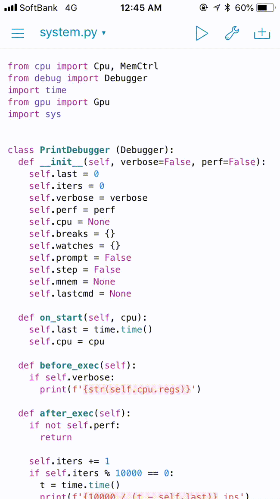

Writing gameboy emulator in Rust
Introduction
This is the article for the 8th day of qiita advent calendar.
I'm writing gameboy emulator in Rust.
I've confirmed some major titles are playable.
- Kirby's Dream Land
- Super Mario Land
- Dr. Mario
- Donkey Kong Land
- Tetris
- Pokemon Red/Green
- The Legend of Zelda
- Mega Man
- …


In this post, I'm going to describe some internals of the emulator.
Instruction emulation
CPU specification
The CPU of the gameboy is LR35902, it's a hybrid of Zilog Z80 and Intel 8080.
The register set is fairly simple. It has only 7 general purpose registers, a flag register (f), a program counter (pc) and a stack pointer (sp).
pub struct Cpu {
a: u8,
b: u8,
c: u8,
d: u8,
e: u8,
f: u8, // flag register
h: u8,
l: u8,
pc: u16, // program counter
sp: u16, // stack pointer
...
}
It has only 4 flags, which are stored in the upper four bits of the flag register.
z(zero flag)n(negative flag)h(half-carry flag)c(carry flag)
There're about 500 instructions supported by the CPU, which can be roughly divided into these 5 types:
- Jump instructions
- Load/store instructions
- Arithmetic/logical
- Rotation/shift
- Misc (stop CPU, interrupt disable/enable)
This is the table of all the instructions.
Code generation
As the CPU has about 500 instructions, writing all of the emulation code by hand sounds troublesome. So I generated the code. What I did is as follows:
- Scrape a web page of the instruction specification.
- Convert the instruction specification to a single yaml file.
- Generate Rust code from the yaml file by using a template engine.
Scraping
By scraping this website, I retrieved the information needed to generate the emulation code.
The information is:
opcode: One or two bytes number which is an identifier of an instruction.size: The size of instruction, including the size of immediate values.operator: The type of operation to perform such asaddandsub.operands: The resources to be read/written by the instruction. Typically, they are registers or immediate values (one or two bytes number which comes after the opcode).operand width: The information about whether this instruction handles 8-bit data or 16-bit data.flags: The information about how the 4 flags in the flag register are updated after the instruction execution.cycles: The number of cycles required to execute the instruction. This is important when we emulate I/O devices together with CPU.
I used the crate, scraper for scraping, and visited each cell in the instruction table.
In each cell, we need to parse a string like this:
LD (BC),A
1 8
- - - -
I used pest parser library to parse the string. With this library, once we define parsing expression grammars (PEG), we can easily extract strings we need. This is the PEG I wrote.
Mnemonic = ${
Operator ~ (Delim ~ Operand)*
}
Delim = _{ " " | "," }
Operator = { ASCII_ALPHANUMERIC+ }
Operand = { (ASCII_ALPHANUMERIC | "+" | "-" | "(" | ")")+ }
Space = _{
" "
}
Newline = _{
"<br>"
}
Number = { (ASCII_DIGIT | "/")+ }
Z = { "Z" }
N = { "N" }
H = { "H" }
C = { "C" }
NotAffect = { "-" }
Set = { "1" }
Unset = { "0" }
Flag = _{ Z | N | H | C | NotAffect | Set | Unset }
Flags = ${ Flag ~ " " ~ Flag ~ " " ~ Flag ~ " " ~ Flag }
Instruction = _{ Mnemonic ~ Newline ~ Number ~ Space ~ Space ~ Number ~ Newline ~ Flags }
Converting to YAML
I converted the retrieved information to the yaml file. The yaml data structure for the instruction LD (BC),A is as follows:
- code: 2 # Opcode is 0x02
operator: ld
operands:
- (bc)
- a
bits: 8 # 8-bit data is loaded
size: 1 # One byte instruction
time: 8 # 8 cycles are consumed by this instruction
z: "-" # No flags are affected by this instruction
n: "-"
h: "-"
c: "-"
Later I found that some of the information in the original website was wrong. So I patched the generated yaml. I may report this to the owner of the website.
Generating Rust code
I used tera, the famous Rust template engine, which is similar to Jinja2.
I basically wrote a template macro for each operator (some operators need more than one template macros). For example, for ld operator, I wrote this macro.
{% macro ld(i) %}
let v = {{ i.operands[1] | getter(bits=i.bits) }};
{{ i.operands[0] | setter(bits=i.bits) }}v);
{% endmacro %}
There are actually many ld instructions (87 instructions), but from this single macro, Rust code for all of them are generated.
LD BC,d16
LD (BC),A
LD B,d8
LD A,(BC)
...
LD A,(a16)
Totally, I implemented 52 macros by hand, and generated 501 instructions. The generated code is about 7000 lines of code.
This is the generated code for LD (BC),A. Each generated instruction is simple and readable. Cpu represents the CPU state and Mmu represents the memory state.
/// ld (bc),a
#[allow(unused_variables)]
fn op_0002(arg: u16, cpu: &mut Cpu, mmu: &mut Mmu) -> (usize, usize) {
let v = cpu.get_a();
mmu.set8(cpu.get_bc(), v);
(8, 1)
}
The template generates also a function with a huge match-pattern block, which will execute an instruction code which corresponds to the given opcode, updating the CPU and memory state.
pub fn decode(code: u16, arg: u16, cpu: &mut Cpu, mmu: &mut Mmu) -> (usize, usize) {
trace!("{:04x}: {:04x}: {}", cpu.get_pc(), code, mnem(code));
match code {
0x0000 => op_0000(arg, cpu, mmu),
0x0001 => op_0001(arg, cpu, mmu),
0x0002 => op_0002(arg, cpu, mmu),
0x0003 => op_0003(arg, cpu, mmu),
0x0004 => op_0004(arg, cpu, mmu),
0x0005 => op_0005(arg, cpu, mmu),
... <about 500 lines>
The generated function will be used in the main loop for emulation. This is the pseudo code.
loop {
// Based on the program counter (the register in the CPU), read the opcode from the memory.
let opcode = fetch_opcode_from_memory(cpu, memory);
/// Call the generated function.
let size_of_inst = decode(opcode, cpu, memory);
// Proceed the program counter.
cpu.program_counter += size_of_inst;
}
Additionally, helper functions for debugging such as printing mnemonic strings are also generated.
Memory emulation
The size of memory address space of Gameboy is 16-bits. Different regions of memory play different roles. For example,
- The address between
0x0000and0x3fffis read-only (i.e. ROM). - The address between
0xff80and0xfffeis both readable and writable; game programs can use it freely. - The address between
0xff00and0xff7fis I/O registers; writing a value actually sends commands to I/O devices such as GPU.
Mostly I used this website to know the role of each memory region including individual I/O registers.
To emulate such memory, I first prepared a byte array whose size is 65536 (16-bit), and wrapped it in a struct Mmu with simple getters/setters to read/write bytes. These getters/setters are expected to be called by the CPU, when instructions access memory.
pub struct Mmu {
ram: Vec<u8>, // Initialized to 65536
}
impl Mmu {
pub fn get8(&self, addr: u16) -> u8;
pub fn set8(&self, addr: u16, value: u8);
pub fn get16(&self, addr: u16) -> u16;
pub fn set16(&mut self, addr: u16, value: u16);
}
But, as I mentioned, different memory region has different behaviour. So I also added the feature to add hook functions (MemHandler). The hook functions are called when the CPU attempts to read/write memory via the getters/setters.
impl Mmu {
/// This function adds a hook function for the memory region `range`
pub fn add_handler<T>(&mut self, range: (u16, u16), handler: T) -> Handle
where T: MemHandler + 'static;
}
// The following is the definition of MemHandler.
pub trait MemHandler {
fn on_read(&self, mmu: &Mmu, addr: u16) -> MemRead;
fn on_write(&self, mmu: &Mmu, addr: u16, value: u8) -> MemWrite;
}
// And the return value from on_read/on_write to modify the behaviour of the getters/setters.
/// This enum controls the return value of the getters.
pub enum MemRead {
/// Return this value instead of the value from the underlying byte array.
Replace(u8),
/// Just return the value from the underlying byte array
PassThrough,
}
/// This enum controls the setter behaviour
pub enum MemWrite {
/// Write this value to the underlying byte array, instead of the value given to the setter.
Replace(u8),
/// Just write the same value to the underlying byte array
PassThrough,
/// Don't touch the underlying byte array
Block,
}
(The actual code is here)
When the CPU reads/writes from/to Mmu via the getters/setters, on_read / on_write methods of corresponding MemHandler are called.
By changing the return value from on_read / on_write, the implementor of MemHandler can control what the getter function actually returns and also what action should be taken on the setter called.
By using this design, we can easily modify the behaviour of each memory region. The following code is the initialization phase of Mmu, where we can add handlers for corresponding memory regions.
mmu.add_handler((0x0000, 0xffff), dbg.handler()); // Debugger hooks all entire memory space.
mmu.add_handler((0xc000, 0xdfff), cgb.handler()); // Gameboy color logic hooks these regions.
mmu.add_handler((0xff4d, 0xff4d), cgb.handler());
mmu.add_handler((0xff56, 0xff56), cgb.handler());
mmu.add_handler((0xff70, 0xff70), cgb.handler());
mmu.add_handler((0x0000, 0x7fff), mbc.handler()); // Memory bank controller
mmu.add_handler((0xff50, 0xff50), mbc.handler());
mmu.add_handler((0xa000, 0xbfff), mbc.handler());
mmu.add_handler((0xff10, 0xff3f), sound.handler()); // Sound device
mmu.add_handler((0xff46, 0xff46), dma.handler()); // DMA controller
mmu.add_handler((0x8000, 0x9fff), gpu.handler()); // GPU
mmu.add_handler((0xff40, 0xff55), gpu.handler());
mmu.add_handler((0xff68, 0xff6b), gpu.handler());
mmu.add_handler((0xff0f, 0xff0f), ic.handler()); // Interrupt controller
mmu.add_handler((0xffff, 0xffff), ic.handler());
mmu.add_handler((0xff00, 0xff00), joypad.handler()); // Input device
mmu.add_handler((0xff04, 0xff07), timer.handler()); // Timer
mmu.add_handler((0xff01, 0xff02), serial.handler()); // Serial
A single memory address can have multiple handlers. If two handlers are added to the same address, the first one is called prior to the second one.
Then, if the first one returns Replace, the second one is called with the value from Replace. If PassThrough, the second one is called with the original value.
Note that in the code above,
the debugger hooks the entire memory space. This is for collecting information for debugging or for stopping programs when certain addresses are written (watchpoint).
The return value of on_read / on_write of the debugger is normally PassThrough, so all the access just goes to the next handlers.
I/O emulation
The following components need to be emulated. All of them are functional (to some extent) in my emulator.
- GPU
- DMA controller
- Interrupt controller
- Joypad
- Memory bank controller (MBC)
- Serial port
- Timer
Emulating I/O devices itself is a long story. In this post, I just leave short comments about some components and don't go deeper. I explain about I/O emulation in another post.
Gpu
The state of the GPU changes depending on the number of cycles since the hardware is powered on. When emulating instructions, I retrieved the number of clock cycles required for each instruction. The number is mainly used for emulating the state of GPU.
GPU periodically scans certain memory regions to fetch sprites data. The behaviour of GPU is like emulating the behaviour of CRT. It updates the screen pixels line by line. Such GPU behaviour is also emulated.
Sound
I personally think that emulating sounds is most difficult part because it's difficult to say this is the correct sound. I still don't know if my emulator correctly plays sound. But at least, the current implementation sounds good enough to my ears.
MBC
Memory bank controller (MBC) is not actually the logic in side the gameboy device. It's in the cartridges. This means that different cartridges have different MBC implementation. You can see that in this page.
In my emulator, I supported the following MBCs:
- MBC1
- MBC2
- MBC3
- MBC4
- MBC5
- HuC1 (WIP)
In the gameboy, save data is stored to battery backed RAM in cartridges. When such battery backed RAM is accessed, the emulator writes the content to a file.
Debugger
Debugging is important, especially for complicated emulator like Gameboy.
My emulator has the debug mode. When the emulator is started in debug mode, we can run some debug commands in command line interface. The following debug commands are supported.
>> help
List of available commands:
break: Manage break points. (short: b)
watch: Manage memory watches. (short: w)
help: Show the list of commands available. (short: h)
quit: Quit this emulator.
cont: Continue execution. (short: c)
step: Step execution. (short: n)
dump: Dump information. (short: d)
Each command shows help nicely thanks to structopt.
>> break
break 0.1.0
Yushi Omote <yushiomote@gmail.com>
Manage break points.
USAGE:
break <SUBCOMMAND>
FLAGS:
-h, --help Prints help information
-V, --version Prints version information
SUBCOMMANDS:
add Add a break point
help Prints this message or the help of the given subcommand(s)
list List break points
remove Remove a break point
You can set break points, execute instructions one by one, dump cpu state and memory.
>> c
Continue.
Break at 0064: 00f0: ld a,(0xff00+a8)
>>
>> n
Step.
Break at 0066: 00fe: cp d8
>> n
Step.
Break at 0068: 0020: jr nz,r8
>> n
Step.
Break at 0064: 00f0: ld a,(0xff00+a8)
>> n
Step.
Break at 0066: 00fe: cp d8
>> dump cpu
a: [07], b: [01]
c: [02], d: [04]
e: [02], f: [50]
h: [60], l: [0f]
pc: [0066]
sp: [fffe]
flgs: [_n_c]
>> dump mem 0066 00100
0001 0203 0405 0607 0809 0a0b 0c0d 0e0f
0060: fe90 20fa 0d20 f71d 20f2
0070: 0e13 247c 1e83 fe62 2806 1ec1 fe64 2006
0080: 7be2 0c3e 87e2 f042 90e0 4215 20d2 0520
0090: 4f16 2018 cb4f 0604 c5cb 1117 c1cb 1117
00a0: 0520 f522 2322 23c9 ceed 6666 cc0d 000b
00b0: 0373 0083 000c 000d 0008 111f 8889 000e
00c0: dccc 6ee6 dddd d999 bbbb 6763 6e0e eccc
00d0: dddc 999f bbb9 333e 3c42 b9a5 b9a5 423c
00e0: 2104 0111 a800 1a13 be20 fe23 7dfe 3420
00f0: f506 1978 8623 0520 fb86 20fe 3e01 e050
0100: 00
Speed control
The CPU of the gameboy is much slower than CPUs of our PCs today, and the game programs was written on the assumption of such slow CPU. Hence, just emulating instructions in a loop at full speed is too fast and can break the assumption. As the result, some motion is the game becomes extremely fast and no longer playable. To avoid that, we need to adjust emulation speed. The following two animations are the demo of Donkey King Land: the first one is emulation at full speed without speed moderation and the second one is with speed moderation.
Without speed moderation

With speed moderation

I moderated emulation speed by measuring the current clocks per second and inserting delays. If the current clock frequency is more than the one of the actual gameboy (4.1943 MHz), the emulator increases the delay time.
no_std
The core part of this emulator is actually no_std library. In Rust, no_std means that the library doesn't depend on any OS-specific functions. So, the library can be easily ported to various platforms including embedded systems, and even to bare-metal (no OS).
In this project, the gameboy emulator landed on MacBook Pro (no OS). (Sounds and inputs are not yet implemented)


Pythonista 3
Before emulating Gameboy in Rust, I also tried in Python on Pythonista 3, which is the Python development environment on iOS.
I managed to emulate the title logo. But I found emulation in Python was too slow. Even Python (CPython) on PC (not Pythonista) was still slow. According to PyBoy, we need to use PyPy instead of CPython to achieve enough performance. Pythonista 3 seems to be based on CPython, and what's more, it's running on iPhone, so I gave up.
This animation is the emulation on Pythonista 3. The emulator emulates only CPU and GPU, and is running at full speed (No moderation). You can see it's slow.

Summary
- Writing gameboy emulator in Rust.
- Games are playable with graphics and sounds.
- Code generation for instruction emulation.
- Landed on bare-metal.